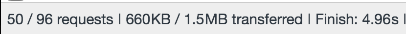

REST
*Of the millennium :)
/plants/plants/1GET /plants -> Plant.index()GET /plants/1 -> Plant.show(1)POST /plants/1 -> Plant.create(1)DELETE /plants/1 -> Plant.destroy(1)GET /plants/1/characteristics -> Plant.find(1).characteristics(){ "id": 1, "commonName": "Scarlet Oak", "scientificName": "Quercus coccinea", "links": { "leaf_venation": "/plants/1/leaf_venation", "leaf_shape": "/plants/1/leaf_shape", "fruit_type": "/plants/1/fruit_type", } }

= Request shapeThe client gets exactly what it asks for; nothing more, nothing less.
query { plants(id: 1) { commonName , scientificName , fruit_type { name } } }
{ "data": { "commonName": "Scarlet Oak", "scientificName": "Quercus coccinea", "fruitType": { "name": "nut" } } }
{ "__type": { "name": "Plant", "fields": [ { "name": "commonName", "type": { "name": "String" }, }, { "name": "scientificName", "type": { "name": "String" }, }, { "name": "fruitType", "type": { "name": "FruitType" }, } ] } }
GET for queriesPOST for mutationsFetching any kind of data.
query { plants { commonName } } // query can be omitted { plants { commonName } }
Changing data (and then fetching)
mutation { newPlant(commonName: "Strawberry", scientificName: "Fragaria vesca", fruitType: "accessory") { commonName scientificName } }
Save views into data
{ plant(id: 1) { ...names } } fragment names on Plant { commonName scientificName }